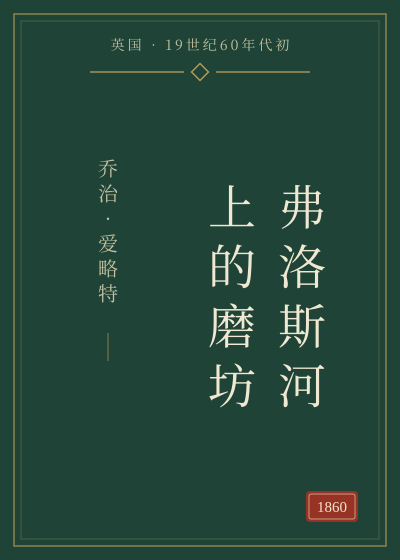

弗洛斯河上的磨坊
一、基本信息
| 作者 | 乔治·艾略特 |
|---|---|
| 成书/出版 | 1860年（作者页注记：Britannica 列举——弗洛斯河上的磨坊 (1860)） George Eliot — Encyclopaedia Britannica (by Gordon S. Haight)（百科全书） |
| 国别/地区 | 英国 |
| 时代 | 近代 · 19世纪60年代初 |
| 体裁 | 长篇小说 |
| 语言 | 英语 |
《弗洛斯河上的磨坊》兄妹图（主题·结构图）
二、创作背景
作者页注记：亚当·比德 (1859)、弗洛斯河上的磨坊 (1860)——'早期名作（Britannica 列举）'。
Britannica：乔治·爱略特——《米德尔马契》作者（作者页交叉）。
题材（通说待核）：麦琪与汤姆兄妹——弗洛斯河畔的家族恩怨与洪水。
三、内容脉络
（通说待核）麦琪的才情与家族的排斥。
（通说待核）洪水的终局与兄妹的和解。
四、主要人物表
| 人物 | 身份 | 说明 |
|---|---|---|
| 麦琪·塔利弗 | 女主角 | （通说待核） |
| 汤姆 | 兄长 | （通说待核） |
五、主题与艺术特点
- 兄妹的对立与和解（通说待核）。
- 女性才情的压抑（通说待核）。
- '早期名作'（B注记）。
六、影响与评论
- Britannica：'早期名作'（作者页注记）。
George Eliot — Encyclopaedia Britannica (by Gordon S. Haight)（百科全书） - Britannica：《米德尔马契》为代表作（作者页交叉）。
George Eliot — Encyclopaedia Britannica (by Gordon S. Haight)（百科全书）
七、阅读建议
难点
- 多塞特/林肯郡乡村（圣奥格镇说——通说待核）。
- 心理现实主义的早期形态。
- 《弗洛斯河上的磨坊》中译本（人民文学等——通说待核）。
- 英文原版（公有领域）。
乔治·爱略特第二作；先于《米德尔马契》。
八、待核实
- 麦琪/汤姆人名核对（通说）。
- 1860年出版细节待核。
- 洪水结局细节待核。